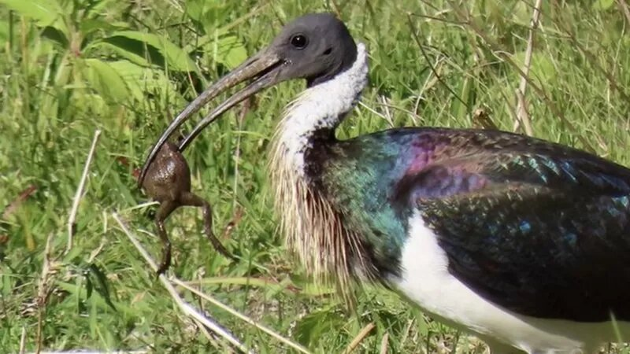

Alzheimer: el medicamento aclamado como un avance trascendental en la lucha contra la enfermedad.
Expertos han aclamado el primer fármaco capaz de ralentizar la destrucción del cerebro afectado por alzhéimer como un avance trascendental.
El logro de los investigadores pone fin a décadas de fracaso y demuestra que una nueva era de tratamiento con medicamentos contra esta enfermedad -la forma más común de demencia- es posible.
Sin embargo, el medicamento, conocido como lecanemab, solo tiene un pequeño efecto y su impacto en la vida diaria de las personas es debatible.
Además, el fármaco es efectivo en las primeras etapas de la enfermedad, así que muchos pacientes quedarían excluidos sin que haya un método revolucionario para detectarlo anticipadamente.
25/11/2022
Leer más

Ronna, ronto, quetta y quecto: los nuevos prefijos que se crearon para poder medir la gran cantidad de datos que genera el mundo.
La inmensa cantidad de datos que generamos como especie y publicamos en internet todos los días han creado un problema lingüístico.
Los prefijos que hemos usado para nombrar la información (kilobytes, megabytes, terabytes) ya no nos alcanzan para describir todo lo que existe - y que existirá - en la red.
Es por eso que la Conferencia General de Pesas y Medidas (CGPM por sus siglas en inglés), durante su reunión número 27, definió los nuevos prefijos que se utilizarán dentro del Sistema Internacional de Unidades para expresar cantidades masivas, al igual que increíblemente diminutas.
25/11/2022
Leer más

El ave australiana que sorprende a los científicos por su capacidad para comer sapos venenosos.
Hay pocos animales más despreciados en Australia que el ibis blanco.
Se ha ganado el mote de "pollo de la basura" por su propensidad a buscar comida donde puede, como en basureros o, incluso, quitándole comida a la gente de las manos.
Pero, al parecer, este pájaro encontró una manera de mejorar su reputación.
Los sapos de caña fueron introducidos en Australia en la década de 1930 y como no tienen depredadores naturales en el país, han causado estragos en las poblaciones de animales nativos.
25/11/2022
Leer más